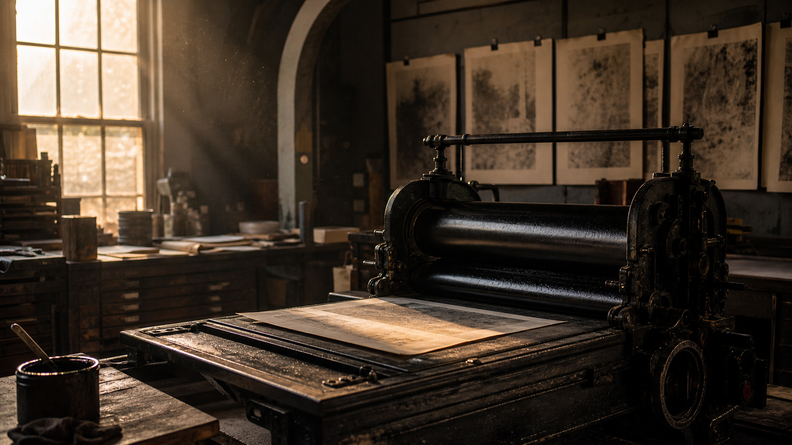
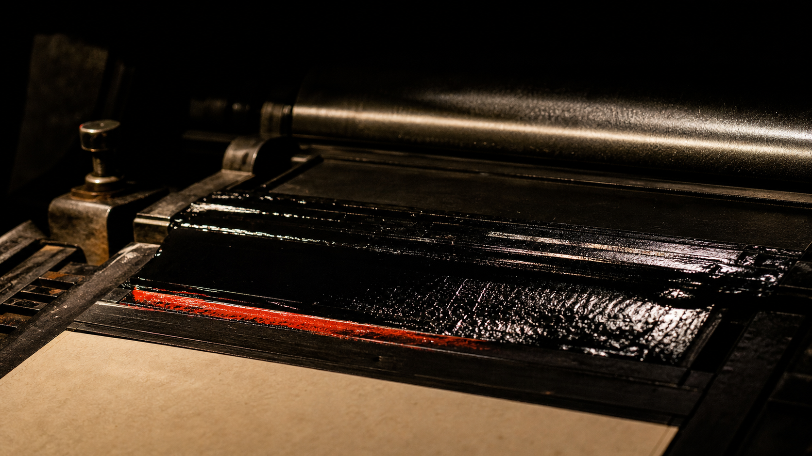
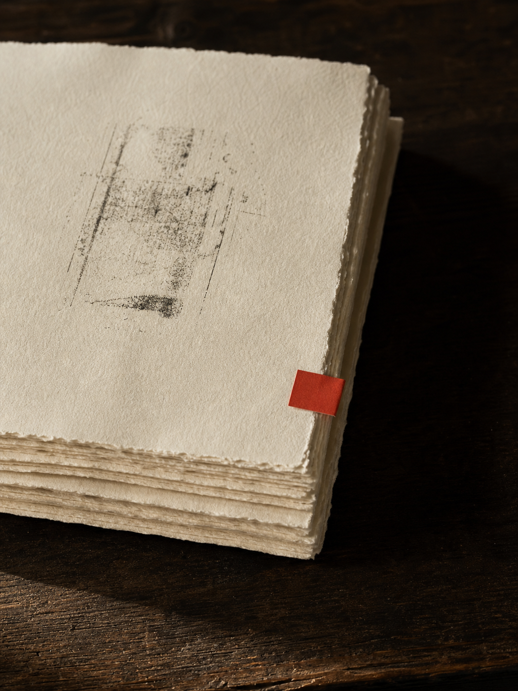
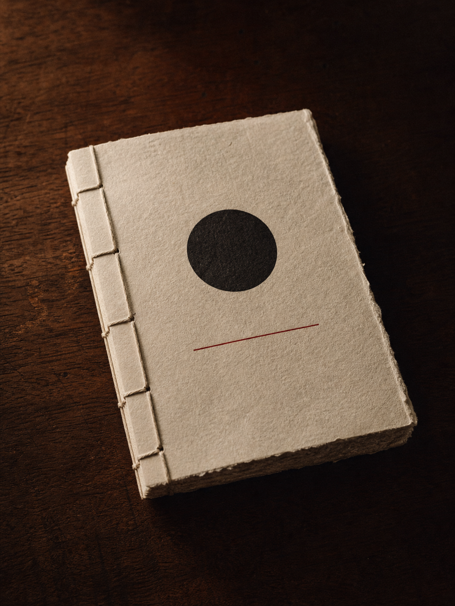
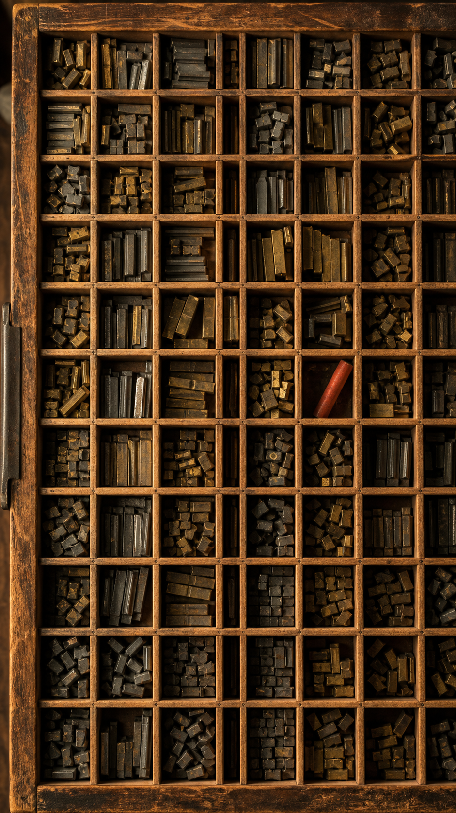
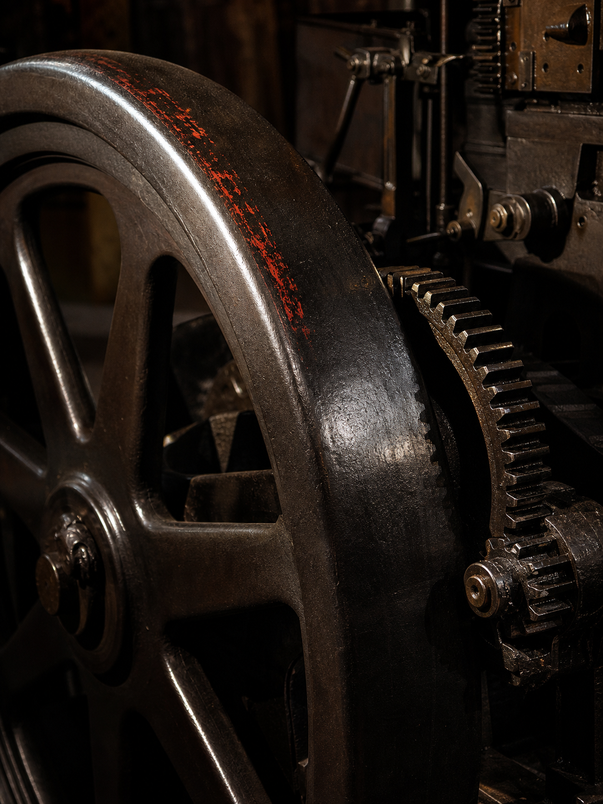
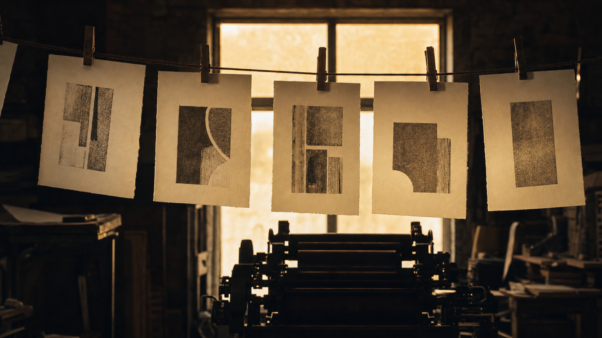
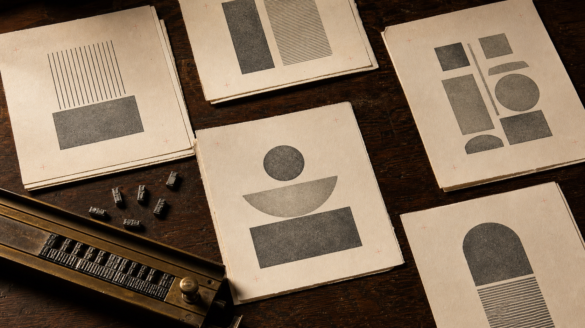
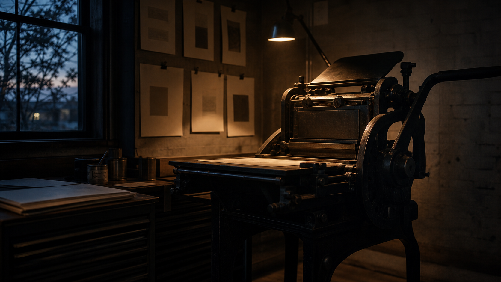

The Stick
Type is set letter by letter into a brass composing stick, read upside down and backwards until the line fills.


An editorial letterpress foundry. Set by hand, pulled one sheet at a time.
Quire is a foundry of two, a compositor and a printer, working one cast-iron press on a single floor. Nothing is set in software. Every line is built by hand from metal sorts, read upside down and backwards, locked tight, and inked by the eye.
We do not reprint and we do not scale. Each edition is the residue of one season at the press: the paper it bit into, the ink we mixed that week, the pressure of a hand on the bed. We publish a moment, not a file.

Every page passes through the press three times, and three pairs of hands, before it is an edition.
Type is set letter by letter into a brass composing stick, read upside down and backwards until the line fills.
The forme is locked on the stone and the ink rolled to a single even film, no thicker than a breath.
One sheet meets the type under pressure. The mark is pressed into the paper, not laid on top of it.






The press made the page. Come read the ink.